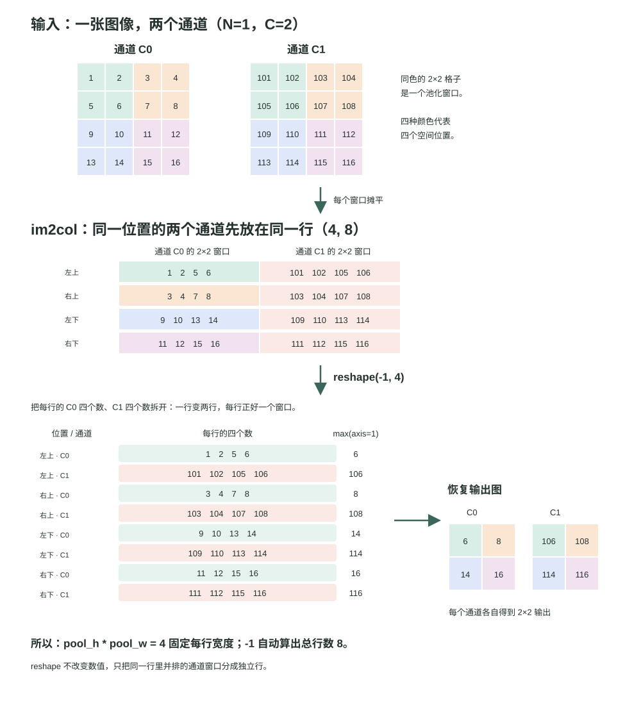
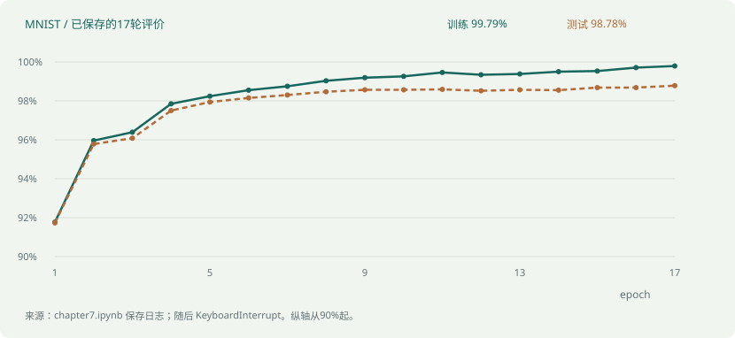

返回学习导航 · 上一章 · 图解速查 · 自己的 Notebook
本章主线：窗口提取局部信息 → 矩阵乘法批量计算 → 反向汇合梯度 → 用分类损失更新参数。
整理于2026-11-13，覆盖已读的7.1—7.5。Notebook保存17轮日志，随后KeyboardInterrupt；当前源码已设为20轮。7.6之后尚未确认阅读。
先用一张图串起来

图中省略批次轴N。当前网络是：
输入 → Conv1 → ReLU1 → Pool1 → Affine1 → ReLU2 → Affine2 → 分数
↓
SoftmaxWithLoss → 损失
predict(x)返回分数；loss(x,t)才连接SoftmaxWithLoss。分类准确率可以直接对分数取argmax，不必先转成概率，因为softmax不改变类别大小顺序。
7.1 整体结构：CNN新增了什么
全连接层把一张图展平后统一处理，连接权重不显式利用原来的局部空间关系。卷积层让相邻像素在窗口内一起参与计算，并让同一组权重在不同位置复用。
| 层 | 做什么 | 是否有可学习参数 | 是否改变形状 |
|---|---|---|---|
| Convolution | 局部窗口加权求和 | W、b | 由核数、窗口、步幅、填充决定 |
| ReLU | 负值归零，引入非线性 | 无 | 不改变 |
| Max Pooling | 每个通道内取局部最大值 | 无 | 通常缩小高宽，通道数不变 |
| Affine | 组合输入特征，生成新特征或分数 | W、b | 改变每个样本的特征维度 |
CNN并没有抛弃第5章的训练框架：前向得到损失，反向得到梯度，优化器再更新参数。池化层可省略，靠近输出仍可使用全连接层。
主教材：7.1，图7-1与7-2。
7.2 卷积层：先理解一个输出值
一个窗口的计算
输入窗口 卷积核
1 2 1 0
3 4 0 -1
输出 = 1×1 + 2×0 + 3×0 + 4×(-1) + b
= -3 （取b=0）
在下一个位置，换一块输入窗口，仍使用同一个核。窗口内是对应位置相乘再求和，不是把两个2×2数组直接做矩阵乘法。教材代码不先翻转核，按严格数学定义属于互相关；深度学习中通常仍称卷积。
通道与卷积核数不要混淆
| 名称 | 记号 / 形状 | 含义 |
|---|---|---|
| 输入 | (N,C,H,W) |
N个样本，每个有C个通道 |
| 卷积核 | (FN,C,FH,FW) |
FN个核，每个覆盖全部C个输入通道 |
| 偏置 | (FN,) |
每个输出通道一个，空间位置共享 |
| 输出 | (N,FN,OH,OW) |
一个核生成一个输出通道 |
例如RGB输入C=3，一个5×5核实际有3×5×5=75个权重。30个核共有2250个权重、30个偏置，产生30个输出通道。核的输入通道数C必须匹配输入，核数FN决定输出通道数。
Padding与Stride决定窗口能放多少次
- Padding P：在高宽边缘各补P圈零，扩大边界处可覆盖的范围。
- Stride S：窗口每次移动S格，决定输出位置间隔。
OH = (H + 2P - FH) // S + 1
OW = (W + 2P - FW) // S + 1
这里按im2col的整数除法计完整窗口。当前网络H=W=28、FH=FW=5、P=0、S=1，所以OH=OW=24。若改成P=2、S=1，则高宽保持28。
7.3 池化层：每个通道独立缩小
最大池化在每个窗口取最大值，通道之间不求和。2×2、stride=2时，24×24变为12×12，30个通道仍是30个。
池化对窗口内小幅位置变化具有一定鲁棒性：只要最大值仍在同一窗口，输出就不变。它不保证任意平移后输出都相同。
池化没有W、b，但需要记录最大值来自哪里，反向时才能把损失梯度继续传给前面的卷积层。
7.4 实现：从窗口到矩阵，再从梯度回窗口
7.4.1—7.4.3 im2col与卷积前向
im2col按“样本 → 输出位置 → 通道 → 窗口元素”的逻辑排列数据。一行是一个空间位置上、跨全部输入通道的窗口。相邻窗口可能重叠，因此原图中的元素会被复制到多行。
输入 x (N, C, H, W)
窗口 col (N*OH*OW, C*FH*FW)
卷积核 W (FN, C, FH, FW)
展开的核 col_W (C*FH*FW, FN)
矩阵乘法结果 (N*OH*OW, FN)
最终输出 (N, FN, OH, OW)
Notebook的两个输出可以自己算出来：
| 输入 / 窗口 | 输出位置 | 每行长度 | col形状 |
|---|---|---|---|
(1,3,7,7) / 5×5，S=1，P=0 |
1×3×3=9 | 3×5×5=75 | (9,75) |
(10,3,7,7) / 同上 |
10×3×3=90 | 75 | (90,75) |
col = im2col(x, FH, FW, self.stride, self.pad)
col_W = self.W.reshape(FN, -1).T
out = np.dot(col, col_W) + self.b
out = out.reshape(N, out_h, out_w, FN).transpose(0, 3, 1, 2)
W.reshape(FN,-1)让每个核占一行，转置后一个核占一列。一行窗口乘一列核，得到该位置、该核的输出。偏置(FN,)广播到每一行。
结果先恢复为(N,OH,OW,FN)，再把FN移到通道轴；reshape负责分组，transpose负责轴顺序。只reshape成(N,FN,OH,OW)会把元素排错。
这种实现将大量窗口计算交给NumPy矩阵乘法，代价是展开窗口占用额外内存。具体排列见作者im2col，本项目使用自己的util.py。
卷积反向：复用Affine的矩阵求导
前向是Y = A @ B + b，A=col，B=col_W。先把输出梯度转换为与Y相同的二维排列，记为G：
FN, C, FH, FW = self.W.shape
G = dout.transpose(0, 2, 3, 1).reshape(-1, FN)
self.db = G.sum(axis=0)
dcol_W = self.col.T @ G
self.dW = dcol_W.T.reshape(FN, C, FH, FW)
dcol = G @ self.col_W.T
dx = col2im(dcol, self.x.shape, FH, FW, self.stride, self.pad)
| 梯度 | 形状核对 | 直观解释 |
|---|---|---|
| db | (FN,) |
一个偏置被多处使用，各处贡献相加 |
| dcol_W | (C*FH*FW,FN) |
各窗口对同一核权重的贡献相加 |
| dW | (FN,C,FH,FW) |
把展开权重的梯度恢复成原参数排列 |
| dcol | (N*OH*OW,C*FH*FW) |
通过核权重，把上游梯度传回每个窗口 |
| dx | (N,C,H,W) |
各窗口梯度汇合到原输入位置 |
前向缓存x、col、col_W，分别用于输入形状恢复、权重梯度和窗口输入梯度。这里dout是损失对层输出的梯度，不是预测值或参数的更新量。
col2im为什么要累加
用一维重叠窗口看最清楚：
输入 [a, b, c]
窗口1 [a, b] 收到窗口梯度 [1, 2]
窗口2 [b, c] 收到窗口梯度 [3, 4]
汇回输入 [1, 5, 4] b的贡献：2+3
一个变量通过多条路径影响损失，梯度需要求和。因此col2im(im2col(x))在有重叠时不会直接等于x，而会把重复出现的值累加；它在反向中用于汇回窗口梯度。
对照自己的Convolution.backward、Affine公式和作者层实现。
7.4.4 池化reshape：一行只放一个通道的窗口

col = im2col(x, pool_h, pool_w, stride, pad)
col = col.reshape(-1, pool_h * pool_w)
arg_max = np.argmax(col, axis=1)
out = np.max(col, axis=1)
out = out.reshape(N, out_h, out_w, C).transpose(0, 3, 1, 2)
| 步骤 | 形状 | 每行是什么 |
|---|---|---|
| im2col后 | (N*OH*OW,C*PH*PW) |
一个位置，所有通道的窗口 |
| reshape后 | (N*OH*OW*C,PH*PW) |
一个位置，一个通道的窗口 |
| max后 | (N*OH*OW*C,) |
每个窗口的一个最大值 |
| 恢复输出 | (N,C,OH,OW) |
各样本、各通道的输出特征图 |
图中N=1、C=2、输入4×4，窗口2×2、S=2：(4,8) → (8,4) → (8,) → (1,2,2,2)。-1自动推导窗口行数；它不表示“压掉通道”，通道只是被临时并入行数。
池化反向：argmax记录路线
前向窗口 [1, 5, 2, 3] → 5，arg_max=1
上游梯度 2
窗口内梯度 [0, 2, 0, 0]
dout = dout.transpose(0, 2, 3, 1)
pool_size = self.pool_h * self.pool_w
dmax = np.zeros((dout.size, pool_size))
dmax[np.arange(self.arg_max.size), self.arg_max] = dout.flatten()
dcol = dmax.reshape(dout.shape[0] * dout.shape[1] * dout.shape[2], -1)
dx = col2im(dcol, self.x.shape,
self.pool_h, self.pool_w, self.stride, self.pad)
np.arange(...)给出行号，arg_max给出各行的列号；配对索引只在被选中的位置填入梯度。最大值并列时，当前实现采用argmax返回的第一个位置。若池化窗口重叠，汇回输入时同样累加。
当前Pooling输出尺寸公式没有包含pad，按pad=0使用；网络采用2×2、stride=2。教材位置：7.4.4，书内223页，也可做池化短课。
7.5 SimpleConvNet：把层组装成网络
输出与参数形状总表
| 位置 | 输出形状 | 参数形状 / 数量 |
|---|---|---|
| 输入 | (N,1,28,28) |
无 |
| Conv1 → ReLU1 | (N,30,24,24) |
W1 (30,1,5,5)，b1 (30,)；780个 |
| Pool1 | (N,30,12,12) |
无 |
| Affine1内部展平 | (N,4320) |
30×12×12=4320 |
| Affine1 → ReLU2 | (N,100) |
W2 (4320,100)，b2 (100,)；432100个 |
| Affine2 | (N,10) |
W3 (100,10)，b3 (10,)；1010个 |
总参数433890个，其中大部分在Affine1。卷积虽然输出许多空间位置，但同一核共享参数，参数量不乘OH×OW。各组梯度与参数同形。
Affine前向保存original_x_shape，再展平；反向先算二维dx，再恢复原四维形状，才能传给Pool1。实现见common/layers.py。
三个方法是一条调用链
predict(x) 顺序forward → 分类分数
loss(x,t) predict → SoftmaxWithLoss → 标量损失
gradient(x,t) loss建立缓存 → 损失层backward(1)
→ 各层逆序backward → 收集六组参数梯度
外部训练循环 params[key] -= learning_rate * grads[key]
gradient仍经过没有参数的ReLU和Pooling，否则梯度无法传回Conv1。只有Conv1、Affine1、Affine2提供W和b的梯度。
层对象和network.params持有同一参数数组，所以原地-=会同步更新层看到的参数；如果只把字典键重新绑定到一个新数组，层可能仍引用旧数组。作者结构可对照SimpleConvNet。
Python细节：默认字典为什么用None
def __init__(self, conv_param=None):
if conv_param is None:
conv_param = {"filter_num": 30, "filter_size": 5,
"pad": 0, "stride": 1}
可变默认参数在函数定义时只创建一次，可能被多次调用共享。在内部新建字典，让省略参数的每次调用独立。整数和元组等不可变默认值不属于这一问题。
训练循环：一批、一次更新、一轮
数据接口
(x_train, t_train), (x_test, t_test) = load_mnist(
normalize=True, flatten=False, one_hot_label=True
)
flatten=False保留四维图像；归一化使像素缩放到0—1。当前损失层反向按one-hot实现，所以显式请求one-hot标签。准确率函数沿axis=1分别把分数与one-hot标签转成类别编号，累计正确数，再除以总样本数。
一轮内部发生什么
permutation打乱全部样本编号
↓ 每批使用同一组编号同时取图像与标签
求梯度 → SGD原地更新 → 记录更新后当前batch损失
↓ 所有批次完成
分批评价整个训练集、测试集 → 打印这一轮日志
当前每轮遍历一次全部训练样本，不放回地覆盖每个样本。每批求梯度期间固定数据，完成更新后再换下一批。
| 名称 | 当前循环中的含义 | 全量60000张、batch=100 |
|---|---|---|
| iteration | 一个批次求导并更新一次 | 1次更新 |
| epoch | 遍历全部训练样本一次 | 600次更新 |
| 当前源码epochs=20 | 计划20次完整遍历 | 12000次更新（计划） |
重新运行包含network=SimpleConvNet()的训练格会重新初始化，并清空历史列表，不会自动从中断位置续训。第一条日志要等600次更新和训练/测试集评价结束才出现。
日志指标的含义
train_loss_list：每次更新后、当前批次的损失。- 打印的
batch loss：该轮最后一批更新后的损失，没有对整轮求平均。各轮最后一批不同，起伏不等于整个网络突然变差。 train_acc_list/test_acc_list：每轮结束、使用同一轮更新后参数评价的全量准确率。
本次实验：保存了17轮，随后中断

数据直接来自Notebook保存输出，未重新运行训练。
| 保存日志 | batch loss | train acc | test acc | 训练−测试差 |
|---|---|---|---|---|
| 第1轮 | 0.2299 | 91.77% | 91.73% | 0.04个百分点 |
| 第5轮 | 0.0340 | 98.24% | 97.94% | 0.30个百分点 |
| 第10轮 | 0.0078 | 99.26% | 98.57% | 0.69个百分点 |
| 第17轮 | 0.0019 | 99.79% | 98.78% | 1.01个百分点 |
前几轮训练与测试准确率都明显提高。后段训练仍提高，测试提升放缓，二者差距扩大。这个趋势值得观察，但不能只凭末批loss或一个评价点判断过拟合，也不能用这一次实验单独解释哪个设计贡献了多少提升。
运行记录与当前配置分开看：保存日志写着epoch 1/50至17/50，随后错误类型为KeyboardInterrupt；当前单元格源码是epochs=20，执行计数为null。这里只确认存在17轮完整日志，不推断之后是否重跑或20/50轮已经完成。
自己的配置为SGD、lr=0.1、batch=100，每轮评价全量60000/10000张图。作者训练脚本使用Adam、lr=0.001、20轮，每轮评价1000个样本；优化器和评价开销不同，不要求曲线和耗时一致。
回查入口与下一步
| 卡住的地方 | 从哪里看 |
|---|---|
| CNN为什么还有Affine | 结构短课 |
| 池化reshape每行是什么 | 池化窗口短课 |
| 梯度如何从矩阵传回图像 | 卷积反向速查 |
| epoch与更新次数混淆 | 训练日志短课 |
可选回忆：输入(2,3,7,7)、核(4,3,5,5)、S=1、P=0时，col、col_W和最终输出各是什么形状？先自己算，再展开核对。
核对形状
OH=OW=3；col=(18,75)，col_W=(75,4)，最终输出=(2,4,3,3)。18=2×3×3，75=3×5×5，输出通道数来自核数4。
把自己的思路或没看懂的代码发给我，我们继续拆解。下一节按教材进入7.6「CNN的可视化」；以上练习可按需选择，运行成功不等于已独立掌握推导。
来源与代码
- 本地主教材：第7章7.1—7.5的概念主线。
- 自己的Notebook：本笔记的实现、当前配置和17轮保存输出。
- 自己的窗口工具与公共层：im2col/col2im和Affine形状恢复。
- 上文各节链接到作者对应实现，便于对照；本笔记未推进7.6之后的阅读记录。